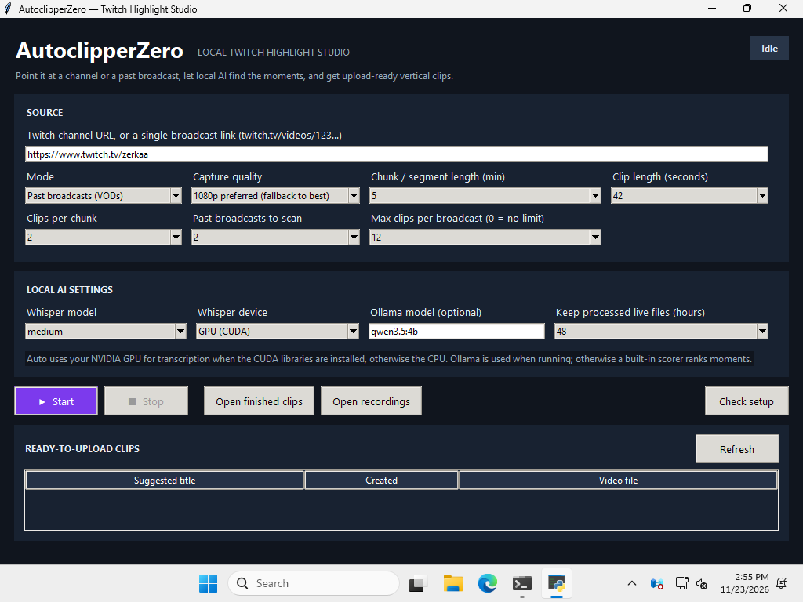

🎮
Capture Twitch content
Watch a channel's recent VODs, process one broadcast link, or record a live stream in manageable segments.
AutoClipper Zero is an AI-assisted Twitch clip maker that turns live streams and past broadcasts into captioned, upload-ready vertical videos—right on your Windows PC.
A real screenshot captured from AutoClipper Zero running on a Windows desktop—not a concept render or a recreated interface.

AutoClipper Zero · Windows desktop application
A local-first workflow built for streamers and editors who want to find moments worth sharing.
Watch a channel's recent VODs, process one broadcast link, or record a live stream in manageable segments.
Use faster-whisper for speech transcription, with CUDA acceleration when available and CPU fallback.
Score candidate highlights with a local Ollama model, or use the built-in heuristic scorer when Ollama is offline.
Render full-screen 1080 × 1920 MP4 clips designed for Shorts, Reels and TikTok-style feeds.
Burn karaoke-style word-highlighted captions into each finished clip.
Save MP4 clips and matching title, description and hashtag notes locally. Review everything before you publish.
An end-to-end highlight pipeline, running on your own machine.
AutoClipper Zero creates local drafts. It does not connect social accounts or publish videos automatically. You choose what to review and share.
View the project on GitHub ↗